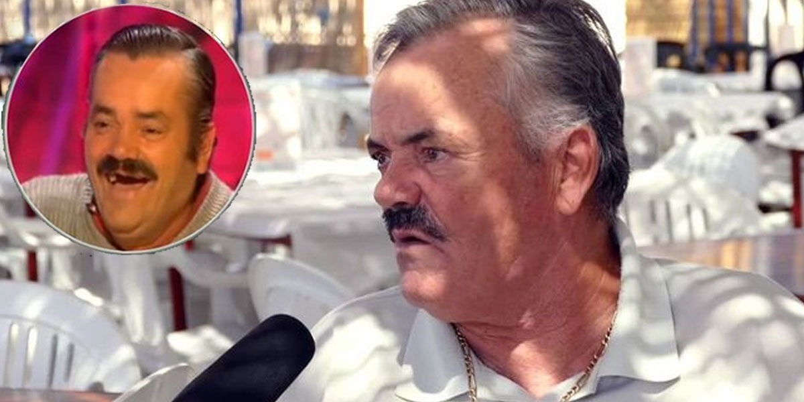

Juan Joya Borja "El Risitas"
Juan Joya Borja, plus connu sous le nom de El Risitas, né le 5 avril 1956 à Séville (Espagne) et mort le 28 avril 2021 dans la même ville, est un humoriste, acteur et phénomène Internet espagnol. Il est devenu populaire internationalement en 2015, grâce aux nombreuses parodies issues d'un entretien de l'émission espagnole de Jesús Quintero, Ratones coloraos.
Malheursement, cette légende vivante nous a quitté le 28 avril 2021. Ce fut un événement bouleversant pour toute la communauté YouTube française et internationale. Ainsi, il restera à jamais dans nos coeurs pour les souvenirs mémorables qu'il nous a apporté.
Pour en savoir plus sur son histoire : ICI